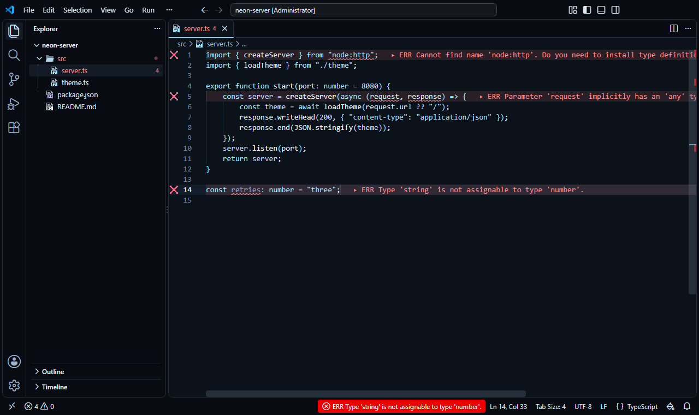
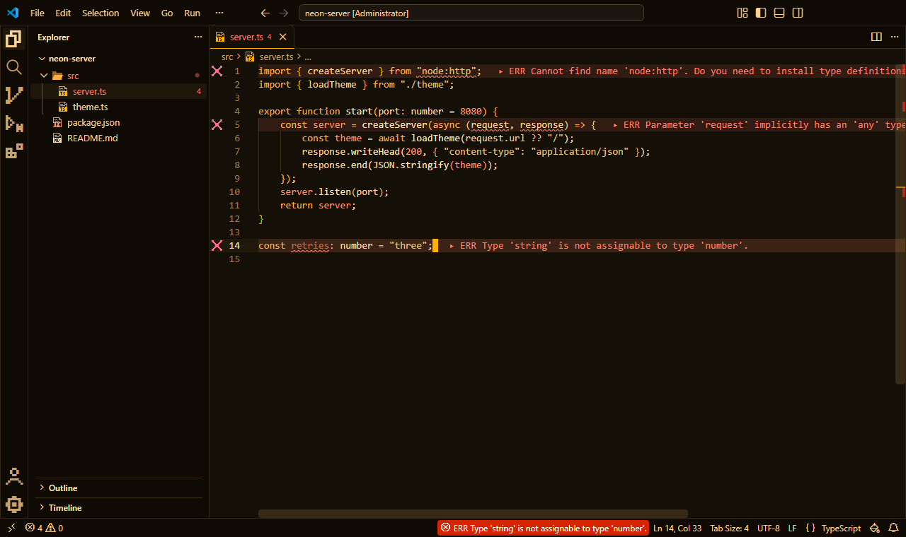
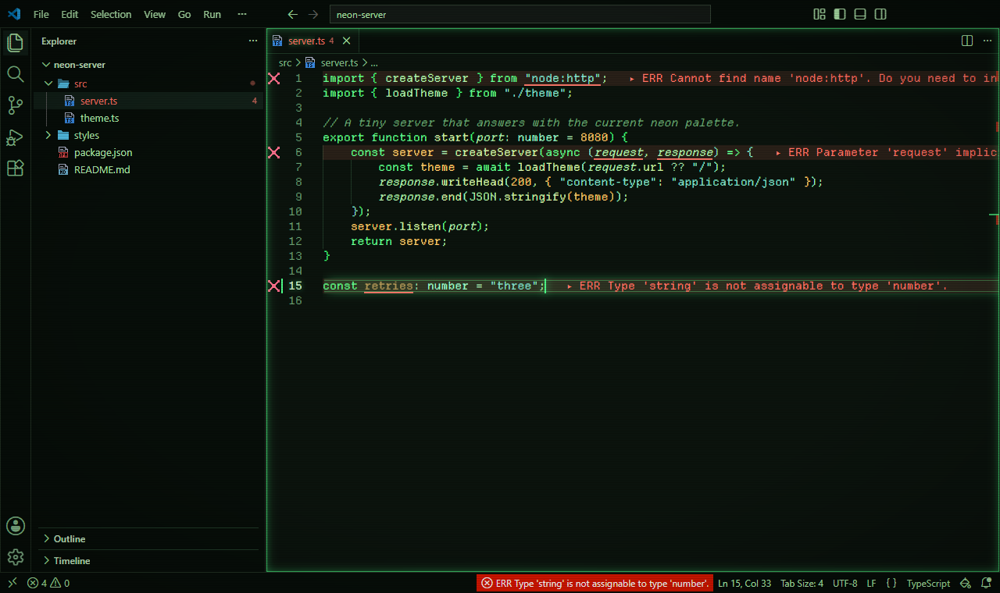
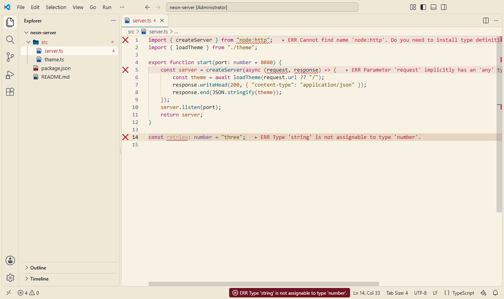

Themes & Aesthetics
Apply a retro or cyberpunk vibe. Each preset includes a curated color palette, pixel icons, and an ergonomic setup.
The safe styling engine for VS Code. Inject custom CSS and JS while keeping the editor's strict native security policy intact. Built to survive updates, it patches your UI and remains reversible.
Install from Marketplace View GitHub Source
Stop writing CSS from scratch. Transform your entire editor in a single click. Every preset applies a coordinated color palette, bundled fonts, and optional visual effects. Choose from clean, minimal setups or dive into full retro environments.
Explore All Themes Explore Dynamic Effects




Apply a retro or cyberpunk vibe. Each preset includes a curated color palette, pixel icons, and an ergonomic setup.
Hardware-accelerated visual effects: a gliding caret, Matrix rain, CRT flicker, typing sparks, and glowing neon code blocks. See the gallery.
Errors and warnings appear right on their line with a soft tint, a pixel icon in the gutter, and the diagnostic message at the end of the line.
JetBrainsMono, BlexMono, ShureTechMono, and DepartureMono come bundled and pre-configured for your editor and terminal.
Don't want to use the bundled themes? No problem. Stylesmith is a robust engine that lets you inject your own CSS and JS files to change anything in VS Code's interface.
Unlike legacy tools, Stylesmith remembers your file paths, reapplies them across editor updates, and supports Subresource Integrity (SRI) pinning to guarantee runtime security.
{
"stylesmith.customCss": [
"file:///Users/me/.vscode/custom.css"
],
"stylesmith.customJs": [
{
"url": "file:///Users/me/.vscode/custom.js",
"integrity": "sha256-kY8B..."
}
]
}Extend the aesthetic outside the editor. Connect Stylesmith with external tools for a cohesive workflow experience.
A matching terminal prompt theme that follows your active Stylesmith color palette, bringing the retro vibe into your CLI.
Stylesmith themes aren't just thrown together in a color picker. Every pixel is calculated and verified by our automated test suite.
Minimum contrast ratios (AA and AAA) ensure syntax highlighting remains legible, even on low-brightness monitors.
We enforce a maximum contrast ratio cap (no pure white on pure black) to eliminate text glare and reduce fatigue during long coding sessions.
Precise delta-E color differences guarantee that critical UI elements and diagnostic errors remain distinguishable for color-blind developers.
Modifying the editor UI typically breaks VS Code's internal security. Stylesmith was engineered to keep you safe:
VS Code's built-in security rules stay intact. Stylesmith ensures only your approved themes run, keeping unauthorized scripts locked out.
Stylesmith modifies the UI without blinding your editor. If a third-party program tries to hijack your installation, the native corruption warning will still protect you.
Theme changes and editor updates are failsafe. If anything interrupts the process, Stylesmith restores your core files to their original state.
Stylesmith explicitly ignores workspace-level configurations. This prevents downloaded, untrusted repositories from hijacking your editor with malicious scripts.
Get a complete retro setup running in seconds without Administrator privileges.
code --install-extension 21010.stylesmithStylesmith: Enable.